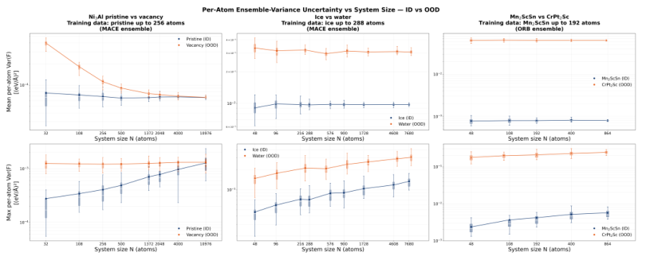
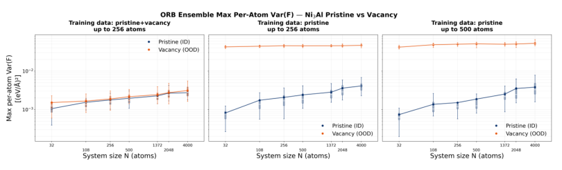

大体系中的不确定度，为何会误导机器学习势的主动学习
论文原文 ↗原文：Chayaphol Lortaraprasert 等，Does System Size Matter in Uncertainty Quantification for Machine Learning Interatomic Potentials?，arXiv:2610.40126，2026 年 10 月 29 日。原文 ·
用机器学习势跑分子动力学时，一种常见做法是让几个独立训练的模型同时预测力。它们越不一致，就认为当前构型越陌生；超过阈值后，便送去重新标注、加入训练集。这个流程把模型不确定度变成了昂贵计算的采购依据。
但一个构型可能有几十个，也可能有上万个原子。把逐原子不确定度合成一个“整体系分数”后，同一个阈值还能跨尺寸使用吗？本文发现，两种最常见的聚合——取平均和取最大值——会以不同方式受到原子数影响。尤其值得注意的是：大体系中高不确定度原子的环境确实可能陌生，但把这些大构型补进训练集，得到的收益仍可能很小。
先明确模型在比较什么
作者先训练多个不同随机种子的 MACE 或 ORB 模型。给定同一构型，每个模型为每个原子输出一个三维力；模型间的力方差作为该原子的不确定度，记为 uᵢ。这里衡量的是模型意见分歧，数值单位为力的平方。
随后需要决定是否把整个构型送去标注。两种常见分数是：
$$\bar u=\frac{1}{N}\sum_{i=1}^{N}u_i,\qquad u_{\max}=\max_i u_i.$$
平均值回答“整个构型平均有多陌生”；最大值回答“最陌生的那个原子有多陌生”。作者让结构的原子数 N 逐渐增加，观察这两种分数怎样改变。
测试包含三组分布内与分布外结构：完整 Ni₃Al 晶体与含空位晶体、冰与液态水，以及不同组成的晶体。所谓分布内，是模型训练中已经见过的相或结构类型；分布外则引入空位、另一种相或另一种组成。作者为不同大小的体系生成分子动力学构型，再将其分为训练、验证和测试数据。实验中的参考力来自 PFP 或 ORB 基础势，以可控成本比较尺寸与结构类型的影响。
平均值把缺陷稀释，最大值又把大体系抬高

图1｜三组体系中，平均不确定度与最大不确定度随原子数的变化；蓝色为分布内，橙色为分布外。
先看一个始终只有一个空位、但晶胞不断扩大的 Ni₃Al 体系。空位主要改变周围一小群原子的环境，远处大多数原子仍像完整晶体。随着 N 增加，这一小群高不确定度原子在平均值中的权重越来越小。于是含空位体系的平均分数逐渐靠近完整晶体，即使缺陷还在，信号也被更多普通原子冲淡了。
这解释了平均聚合的特点：对均匀体系，其数值基本不随尺寸改变；对局部缺陷，贡献却大致按受影响原子数与 N 的比值缩小。因此，在小晶胞上能区分空位的平均阈值，移到大晶胞后可能漏掉同一类局部问题。
最大值看起来可以保留缺陷信号，但它有另一种尺寸效应。即使保持同一种完整晶体或同一种相，原子越多，就越有机会碰到一个罕见、畸变程度更高的局部环境。这里涉及极值统计：从同一分布抽取更多样本，样本最大值通常也会升高。
图1中，完整体系的最大不确定度随原子数上升；空位引入的最陌生环境由局部缺陷决定，最大值则相对平坦。两条曲线的距离因此缩小。在 Ni₃Al 的测试范围内，较大完整体系与含空位体系的分数可以重叠；不同组成晶体那一组在所测范围内仍保持分离，但显示出相同的尺寸趋势。
所以，同一个固定阈值可能同时遇到两种问题：平均值在大体系中不再突出局部缺陷，最大值则把更大的正常体系排得越来越靠前。
高分原子确实陌生，为何补算仍然不划算
作者没有停留在分数随 N 改变这一现象。他们追踪每个构型中最大不确定度对应的原子，比较它的局部结构描述和参考力误差。随着体系增大，这些原子的局部环境确实更远离训练数据，力误差也更大。也就是说，高分并非凭空出现的数值噪声，它抓到了真实的稀有局部环境。
接下来才是对主动学习更关键的检验：补充这些构型，模型会改善多少？
作者以只见过不超过 256 原子的完整 Ni₃Al 体系的 ORB 集成为基线，比较两种补充训练数据的方式：一是加入 500 原子的完整体系，二是加入不超过 256 原子的含空位体系。随后重新测量不同尺寸完整与含空位构型的不确定度。

图2｜左为加入小尺寸含空位结构，中为原始基线，右为加入较大完整结构；纵轴为最大逐原子力方差。
加入较大完整构型后，模型对这些构型的最大不确定度只降低约 10⁻⁴ (eV/Å)²，整体曲线仍接近原始基线。加入小尺寸空位构型则让空位体系的不确定度降低约 10⁻² (eV/Å)²，变化幅度大约高两个数量级。这里的“两个数量级”指不确定度下降幅度，并非力精度提升一百倍。
作者用训练目标解释这种差异。常见力损失对所有原子求平均；一个大构型里，少数罕见环境对总损失的权重很小。即使它们的误差和不确定度都高，优化过程仍可能优先照顾大量普通原子。继续添加同类大构型，未必能有效改变这种权重关系。相较之下，小尺寸空位构型更集中地呈现新的环境类型，在这组实验中更有效地改变了模型。
这让“高不确定度值得补算”的直觉多了一步：除了看分数，还要看该分数怎样被体系尺寸影响，以及对应环境在训练目标中能获得多少权重。
改成百分位数或做尺寸校准，是否就够了
作者还测试了取第 80、90、95、99 百分位的不确定度。例如，第 99 百分位关注最高约 1% 的原子，比平均值更突出少数高分环境。但如果缺陷影响的原子数基本固定，当总原子数继续增加，它们仍会落到这个百分位所代表的比例之外。因而百分位聚合延缓了稀释，却没有普遍消除尺寸依赖。
文中也试做了一个可训练的事后校准器：输入原子局部环境的描述特征和体系原子数，学习不确定度的尺寸变化，再将分数映射到参考尺寸。它能让完整体系的尺寸趋势变平，却也会过度修正含空位体系、压缩两者差距。作者因此把可靠的尺寸校准，以及让训练损失更关注异常局部环境，作为后续方法方向。
本文新增的认识很直接：逐原子的模型分歧，聚合后会混入体系尺寸的统计效应；主动学习选构型时，最高分与最高训练价值并不总是一回事。 对正准备把小体系训练出的机器学习势推广到大规模模拟的工作，这比单独比较一张力误差表更贴近实际选点过程。
原始摘要完整中文翻译
机器学习原子间势通常使用不确定度估计来标记分布外构型，并为主动学习选择结构。一个关键问题是：由此得到的结构级不确定度分数，在不同体系尺寸之间是否仍然可比。常见做法是对逐原子不确定度取平均值或最大值，再将所得分数与固定阈值比较，这隐含地假设了这种可比性。我们通过刻画多组分布内／分布外结构对中这两种聚合方式随原子数的变化，检验这一假设。两种聚合表现出不同的尺寸依赖。平均聚合对均匀体系保持尺寸无关，但在大晶胞中失去对缺陷的敏感性。相反，最大值聚合在分布内体系中随尺寸增大，而在含缺陷体系中大致保持平坦，以一种与极值统计相符的方式缩小了分布内与分布外之间的差距。虽然大结构中具有高不确定度的原子可能表明出现了新的局部环境，但在这些结构上重新训练几乎没有带来改善；相比之下，在有意构建为训练分布之外的结构上重新训练则更有效。我们的结果揭示了不考虑尺寸的不确定度判据的一项实际局限，并推动采用考虑尺寸的校准，以在大规模原子模拟中更可靠地检测分布外构型。